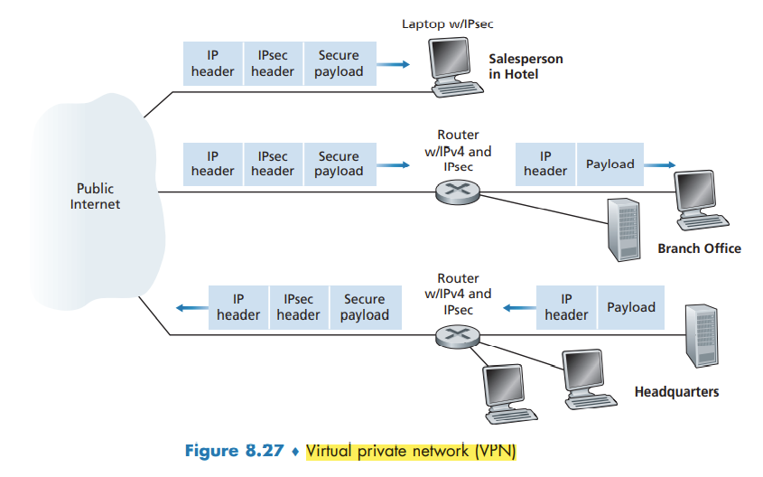

Network-Layer Security IPsec and Virtual Private Networks
Network-Layer Security: IPsec and Virtual Private Networks
The IP security protocol, more commonly known as IPsec, provides security at the network layer. IPsec secures IP datagrams between any two network-layer entities, including hosts and routers.
many institutions use IPsec to create virtual private networks (VPNs) that run over the public Internet.
IPsec provides mechanisms for all these security services, that is, for confidentiality, source authentication, data integrity, and replay-attack prevention.
IPsec and Virtual Private Networks (VPNs)
Instead of deploying and maintaining a private network, many institutions today create VPNs over the existing public Internet. With a VPN, the institution’s inter-office traffic is sent over the public Internet rather than over a physically independent network. But to provide confidentiality, the inter-office traffic is encrypted before it enters the public Internet.

the payload of the IPsec datagram includes an IPsec header, which is used for IPsec processing; furthermore, the payload of the IPsec datagram is encrypted.